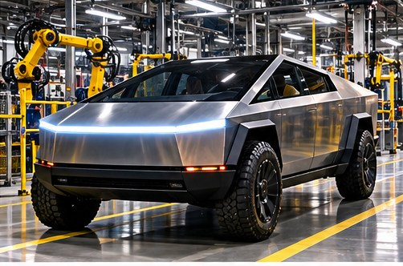

TEXAS NEWS STUDIO / NEWS
TEXAS / BUSINESS · NOVEMBER 7, 2026
TESLA CYBERTRUCK FUTURE IN SPOTLIGHT

TNS EDITORIAL NOTE: This is an original news brief and analysis of publicly discussed developments, not a claim of firsthand reporting. The image is a conceptual illustration, not documentary photography.
A report about Tesla’s future vehicle production plans is raising questions about the Cybertruck and Texas manufacturing.
Separate plans from production
Automakers regularly discuss future models, capacity, and long-term goals. Those statements should not be confused with verified production totals, deliveries, or a formally announced cancellation. Any major claim about the Cybertruck deserves confirmation from Tesla filings, official statements, or reliable reporting.
The Texas connection
Tesla's Austin-area manufacturing footprint makes vehicle strategy a local economic issue as well as a national business story. Suppliers, contractors, and workers can be affected by changes in output even when the broader company remains healthy.
What to watch
Quarterly delivery reports, regulatory filings, official factory announcements, and credible data about demand will say more than a viral rumor. Vehicle headlines can be dramatic; manufacturing reality is usually found in the numbers.
Tex's Take | TNS Commentary
My view: the most useful thing a news outlet can do is separate what is known from what is merely being predicted. Big headlines are easy. Following the documents, the numbers, and the consequences for ordinary people takes more work. And if every prediction of disaster came true, we'd all need a second calendar just to schedule the emergencies. We'll keep watching the facts, and we'll update the story when the evidence changes.